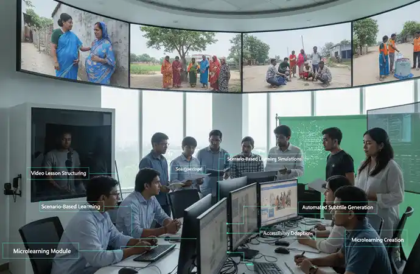

Fantastic team. They took ownership of the project. As a result, they gave very good creative inputs to improve the ad. They also tried hard to reduce the project cost... Read Ehtesham Ahmed's Full ReviewRead More
AI Video Production for International NGOs and Development Organisations (2026)
Anyone managing communications for an INGO, UN agency or development programme is working with the same structural tension: the volume of content that needs to be produced — donor reports, training modules, community communication, field updates — has grown faster than the budget available to produce it traditionally.
A typical mid-size country programme might need: quarterly donor update videos in two or three languages, an onboarding and safeguarding training library for new staff and partners, behaviour change communication content for multiple community groups in the local language, and some way of using the hours of field footage that have accumulated across programme visits and never been edited.
Traditional production can deliver any one of these well. It struggles to deliver all of them, continuously, in multiple languages, on a development sector budget. This is where AI-assisted production has become genuinely useful — not as a novelty, but as a way of making content programmes that were previously aspirational actually deliverable.
This article works through four use cases where AI video is being adopted across the sector in 2026: donor communication, training and capacity building, behaviour change communication, and field documentation. Each section covers what the use case involves, where AI helps specifically, and what to watch for.
1. Donor Communication & Reporting Videos
Most donor communication video falls into a recognisable pattern: a narrated programme update covering activities, outputs and results against the logframe or theory of change, often accompanied by a small number of beneficiary voices and supporting visuals. The content is structured, data-led and produced on a fixed reporting cycle — quarterly, biannual or annual, tied to grant agreement reporting deadlines.
This is precisely the content profile where AI production performs strongly. The priorities — clarity, accuracy, timely delivery against a fixed deadline, and consistency across reporting periods — are AI production's strengths.
Where AI helps specifically
- Deadline reliability: Donor reporting deadlines do not move. A traditional video production booked around a reporting cycle is vulnerable to delays in crew availability, location access or edit turnaround. AI production timelines are predictable and shorter — a 3–5 minute programme update can move from script to delivery in under two weeks.
- Late data changes: Programme figures sometimes change in the days before a reporting deadline — a final beneficiary count, a revised indicator value. With traditional production, a narration change after final edit is a costly and slow re-edit. With AI production, a script-level change to the narration is a same-day update.
- Multi-donor and multilingual reporting: Programmes funded by multiple donors — FCDO, EU, USAID — sometimes need separate report videos with donor-specific framing, or the same content in English and French/Spanish/Arabic for different stakeholders. AI production from a shared template makes producing multiple donor-specific versions economically realistic.
- Consistency across reporting periods: A donor watching quarterly update videos over a two-year grant period notices inconsistency — different narrators, different visual styles, different pacing — as a quality signal. AI production maintains identical presentation style across every reporting cycle, which donors generally read as a positive indicator of programme management quality.
What to watch for
Donor communication content often includes direct quotes or testimony from beneficiaries, programme staff or government counterparts. These should remain as real recorded testimony — AI voice generation is not appropriate for representing another person's actual words or experience. The structure that works well is: AI-produced narration and data presentation framing real beneficiary testimony clips recorded separately. This combines the efficiency of AI for the structural content with the authenticity that donor stakeholders expect from beneficiary voice.
2. Training & Capacity Building Video
Training content represents the largest content volume need for most development organisations, and the area where AI production's economics change what is possible most dramatically. Staff onboarding, safeguarding and PSEA mandatory training, technical capacity building for local implementing partners, and community health worker (CHW) training all fall into this category — and all share the characteristic that the content needs periodic updating as policy, guidance or programme approach evolves.

Where AI helps specifically
- Multilingual delivery from one source: A staff safeguarding module produced once in English can be delivered in Bangla, French, Arabic and Spanish for country teams without separate recording sessions per language — directly relevant for organisations with multi-country operations and staff in non-English-speaking duty stations.
- Policy updates without re-shooting: When a safeguarding policy is revised, or PSEA reporting procedures change, the affected sections of a training module are updated at the script level. The rest of the module — and the AI presenter delivering it — remains identical, so learners experience a consistent module with the updated section integrated naturally.
- CHW training in Bangla and regional registers: Community health worker training is most effective delivered in the trainee's own language, at the appropriate technical level. AI production in Bangla, reviewed by a human specialist with development sector health knowledge, produces content that matches both the language and technical accuracy requirements that CHW training demands.
- SCORM/LMS deployment across country offices: Training content delivered as SCORM packages can be deployed across an organisation's LMS platform with completion tracking — relevant for mandatory compliance training where completion records are an organisational requirement.
A fuller treatment of training and capacity building use cases — including the specific safeguarding and technical accuracy review processes that apply — is covered on the dedicated AI video for NGOs page.
3. Behaviour Change Communication (BCC)
Behaviour change communication content — WASH messaging, immunisation promotion, nutrition behaviour, early marriage and GBV prevention awareness, climate adaptation messaging — is community-facing content with a specific job: shift a defined behaviour in a defined population. The effectiveness of BCC content depends heavily on language, register and cultural framing being right for the specific community — which often means multiple versions for multiple community groups within a single programme area.
Where AI helps specifically
- Multiple community-specific versions: A WASH BCC message that needs to reach Standard Bangla speakers, Chittagonian-register communities and Sylheti-register communities differently can be produced as three versions from one core message — at a cost that would be prohibitive if each required a separate traditional production.
- Message testing: BCC programmes often benefit from testing multiple message framings — different opening hooks, different messenger framings, different emotional registers — to identify which produces the strongest behaviour response before committing to a full rollout. AI production's lower per-version cost makes A/B message testing economically viable in a way it rarely is with traditional production.
- Rapid response to emerging needs: When a health emergency, disease outbreak or climate event creates an urgent community communication need, AI production can turn around message content in days rather than the weeks a traditional shoot-and-edit cycle requires — relevant for time-sensitive public health messaging.
- Update as guidance evolves: WHO guidance, national health protocols and programme approaches change. BCC content tied to specific guidance — handwashing technique demonstrations, immunisation schedules, nutrition recommendations — can be updated at the script level when the underlying guidance changes, keeping community messaging aligned with current best practice without a full re-production.
What to watch for
BCC content is one of the areas where technical accuracy review matters most. AI language models can generate plausible-sounding health information that is subtly incorrect — wrong handwashing duration, incorrect dosage information, inaccurate symptom descriptions. For BCC content, technical review by a human specialist with relevant health, WASH or nutrition knowledge before AI generation begins is not an optional governance step — it is the step that determines whether the content is safe to distribute to community audiences.
4. Field Documentation & Content Repurposing
This is the use case most development organisations have not yet considered, and arguably the one with the highest immediate value relative to effort. Most programmes accumulate field footage — programme visits, distributions, training sessions, community events, beneficiary interviews — recorded for documentation purposes but rarely edited into finished content because a full traditional edit was never budgeted.
The result, across most country programmes, is a growing archive of unused footage — sitting on hard drives, in shared drives, on memory cards from past field visits — representing genuine programme activity that was never turned into usable content.
Where AI helps specifically
- Rough cut generation from raw footage: AI-assisted editing tools can process raw field footage, identify usable segments based on content and quality, and generate structured rough cuts — dramatically reducing the human editing time required to turn an archive into finished content.
- Short-form repurposing for social media: A 20-minute field visit recording can be processed into multiple short-form clips (30–60 seconds) suitable for social media, internal updates or donor newsletters — content types that have a low individual production cost threshold and where AI-assisted editing makes the economics work.
- Adding narration and subtitles to silent or poor-audio footage: Field footage recorded without professional audio equipment often has unusable original audio. AI-generated narration over the visual footage, with the original context (location, date, programme activity) provided in the brief, can turn footage that would otherwise be unusable into a finished short.
- Multilingual versions of archive highlights: A donor highlight reel built from field footage can be produced with narration in multiple languages for different stakeholder audiences — country office staff, donor representatives, headquarters communications — from the same edited footage.
A practical starting point
For organisations with an unused footage archive, a useful pilot is to select 2–3 hours of field footage from a recent programme visit and brief an AI-assisted edit for a specific output — a 3-minute donor highlight reel, or three 60-second social media clips. This is a low-commitment way to assess whether AI-assisted editing of existing footage produces output quality that justifies a broader archive review.
Governance Across All Four Use Cases
Across donor communication, training, BCC and field documentation, the same governance principle applies: AI generates, humans review and approve. For development sector content specifically, this means technical accuracy review for health and WASH content, safeguarding-aware review for any content involving children or vulnerable populations, and dignified representation review for content depicting beneficiaries or programme communities. These are not separate add-on services — they are part of how AI content is produced responsibly for this sector.
A detailed treatment of safeguarding-aware production, Value for Money framing for institutional donors, and donor compliance documentation is available on the AI Video Production for NGOs page. For organisations evaluating cost against existing budgets, the AI Video Production Cost Guide provides detailed pricing by content type.
Key takeaways
- Donor communication and reporting video benefits from AI production's deadline reliability, late-change flexibility and multilingual donor reporting capability — pair AI narration with real beneficiary testimony, not AI-voiced testimony
- Training and capacity building is the highest-volume use case — multilingual delivery from one source and script-level policy updates change what a development sector L&D budget can sustain
- BCC content benefits from multiple community-specific versions and message testing at a cost that makes iteration viable — technical accuracy review is non-negotiable for health and WASH content
- Field documentation and footage repurposing is an underused opportunity — most programmes have an unused footage archive that AI-assisted editing can convert into a usable content library
- Safeguarding, technical accuracy and dignified representation review apply across all four use cases as a standard part of responsible AI production for this sector
Frequently Asked Questions
Yes. AI video suits donor communication content — programme update videos, results summaries, MEL presentations and annual report video supplements. These are structured, narration-led content where clarity matters more than cinematic storytelling. AI production allows content to be produced quickly around reporting deadlines, updated when figures change before submission, and localised for donor-language requirements from a single source.
AI video produces staff onboarding, safeguarding and PSEA training, capacity building content for local partners, and CHW training modules. The development sector advantage is multilingual production — Bangla and other local languages alongside English — delivered as SCORM packages for LMS platforms, and updateable at the script level when guidance or policy changes without re-shooting.
BCC video is community-facing content designed to shift specific health, hygiene, nutrition or social behaviours — handwashing, safe water storage, immunisation, early marriage prevention and similar. AI video supports BCC by producing content in the community's primary language at a cost that allows multiple message variations and community-specific versions to be produced from a single core message.
Yes. Many organisations hold unused field footage — interviews, programme visits, ceremonies — never edited due to cost constraints. AI-assisted editing identifies usable segments, generates rough cuts, adds narration or subtitles, and produces short-form outputs (social clips, donor highlights, internal updates) from existing footage at a fraction of a full traditional edit cost — converting an underused archive into a usable content library.
AI video is appropriate for sensitive content when produced under safeguarding-aware human governance — content involving children, GBV, protection programming or vulnerable populations requires human review at script and output stages against child protection, PSEA and dignified representation standards. AI production does not remove this requirement; it is built into the standard workflow for development sector clients.
Have a content backlog or an upcoming reporting cycle?
Whether it's a donor update due next month, a training library that needs a Bangla version, or a hard drive of field footage that has never been edited — share the details and Libanza Films will return a written estimate and production plan within 1–2 business days.
Discuss Your Programme AI Video for NGOsCustomer Reviews

Very dedicated team! Apprecite their enthusiasm, creativity and passion for their work... Read Md. Jamil Hossain Chowdhury Rahat's Full ReviewRead More

Libanza specializes in creating captivating films and advertisements with compelling narratives and stunning visuals... Read Riad Full ReviewRead More
Get in Touch
Our Clients
Diverse industries, trusted partnerships. From advertising agencies to corporate entities and non-profit organizations, our clients rely on us to bring their creative visions to life. With passion, expertise, and attention to detail, we deliver exceptional video production solutions that exceed expectations. Join our esteemed clientele and experience the power of captivating storytelling with Libanza Films.